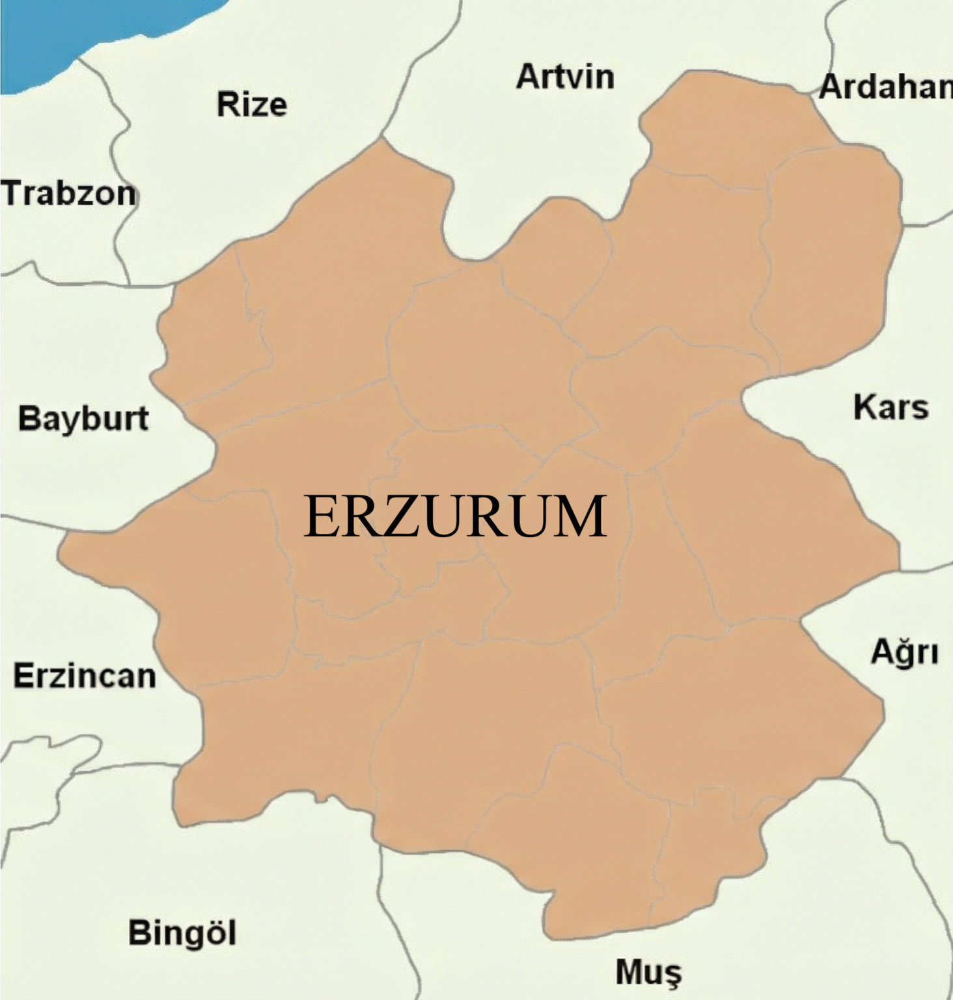
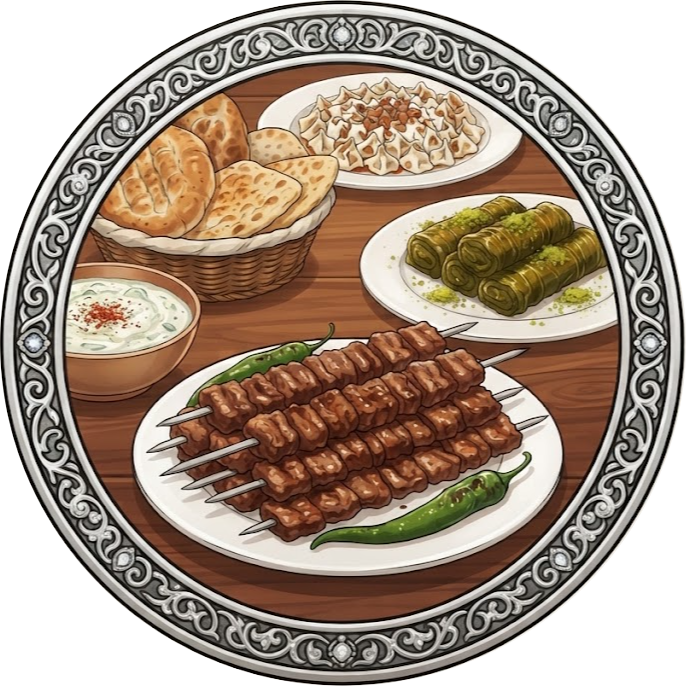
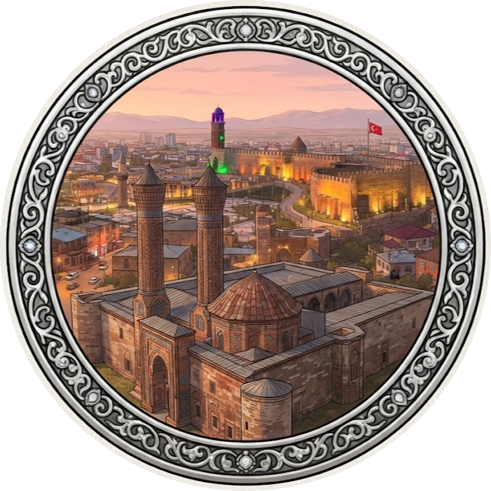
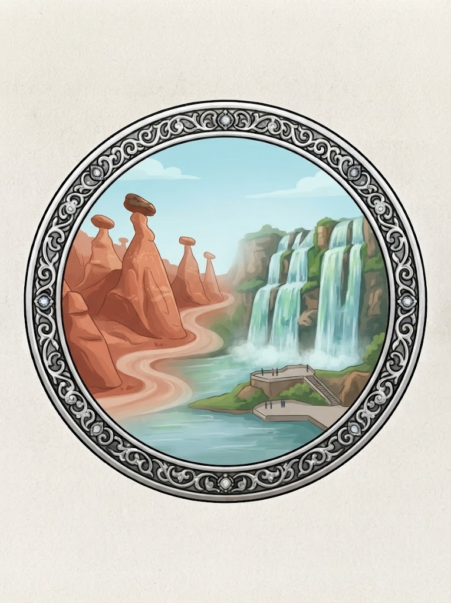
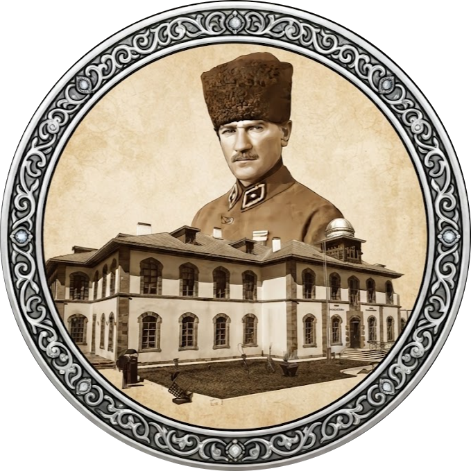

Erzurum'un Kültürel ve Doğal Zenginlikleri
Ana Sayfa
Haritadaki ikonlara tıklayarak Dadaşlar diyarı Erzurum'un eşsiz lezzetlerini, tarihini ve doğasını keşfedebilirsiniz. 🏔️

Yöresel Lezzetler

Tarihi Miras

Doğa Harikaları

Erzurum Kongresi
